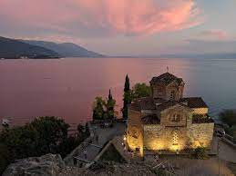
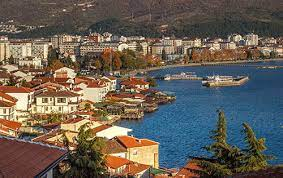
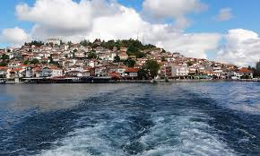
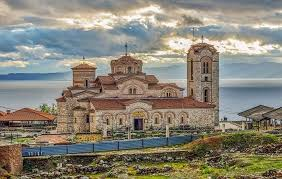

Јас многу сакам да патувам.Патувањето мè исполнува. Ме прави побогат со знаење, искуства и спомени. Нема ништо поубаво од проучување на нови места, историја, откривање на нови навики, вредности, култури, убавини...
„Светот е книга. Оној кој не патува, чита само една страна“ – Свети Августин
Поради големиот број на цркви и манастири, градот е познат како Балкански и Европски Ерусалим. Охрид е познат и како „град на светлината“, што претставува буквален превод на неговото старо име, Лихнид. Охридскиот регион е вклучен во светското населдство на УНЕСКО.
Современиот Охрид е наследник на античкиот Лихнид. Според податоците, градот прв пат се споменува 2.400 години пред новата ера. Лихнид се наоѓал на патот Виа Егнација, наjстарата и наjзначаjната римска сообраќаjница на Балканот.
   Сместено во источниот дел на Македонија, во Малешевската котлина, со површина од 595 км., гордо се издига малото градче Берово. Навидум, тоа со ништо не се разликува од другите мали места во земјава, но со првата средба со домаќините, веќе се гради впечатокот за Берово и за Малешевијата, а со запознавање на природните раритети, богатото културно и историско наследство, се открива тајната која привлекува илјадници посетители годишно токму овде во ова мало граче на Истокот. Богатство од букови, борови, дабови шуми го одредиле и неговото име Малеш – планина, а општинскиот центар Берово и селските населби се сместени на периферијата на котлината.
Со надморска височина од 1100 метри, ресортот е сместен во источниот планински дел на Македонија, близу до градот Берово, веднаш над Беровското езеро и прекрасниот кањон на Малешевските планини. Точно овој регион, често именуван како мала Швајцарија, се наоѓа еден од четирите воздушни коридори во светот, збогатен со огромно количество на кислород, претворајќи го ресортот во беспрекорно чиста воздушна бања
Покрај потенцијалите со кои располага Млешевијата, пред сѐ прекрасната природа, чистиот и здрав воздух со најголема концентрација на кислород, здравата храна, богатството од шумски плодови и лековити треви, локалните специјалитети наделеку познати по својот квалитет успешно се организираат и настани за привлекување на туристите. Овде е краневалот „Ратевски бамбурци“ кој од локален обичај постар од 2000 години, порасна во Малешевски карневал и кој прераснува во туристичка атракција
Традицијата за избор на најцврсто јајце „качор“ од локален обичај, прерасна во организиран настан за време на велигденските празници
Смоларски водопад — водопад сместен на северните падини на планината Беласица, по текот на реката Ломница, на надморска висина од 600 м во регионот на селото Смолари. Селото Смолари се наоѓа во северното подножје на планината Беласица во областа позната како Подгорие. Водопадот е оддалечен 28 километри од градот Струмица
Овој е единствениот постојан водопад во Македонија. Со висина од 39,5 метри, Смоларски водопад е највисокиот во земјава. Тој претставува геоморфолошка, геолошка и хидролошка посебност. Водопадот е тектонски предиспониран со раседна структура која лежи попречно на правецот на течењето на водата на Смоларска река. На дното од водопадот формиран е џиновски лонец, чија должина во правец на течењето на речната вода изнесува 5 метри, широчината е 11 метри, а длабочината се движи од 0,5 до 0,7 метри. Доколку сте обучен љубител на екстремни спортови, како што е кањонскиот спорт, тогаш со потребната алпинистичка опрема може да се впуштите во предизвикот да се спуштите по должината на Смоларски Водопад. Адреналинот загарантирано ќе се покачи.
Планината Баба, со врвот Пелистер се наоѓа на јужниот дел од Република Македонија и е со алпски карактеристики. Пелистер е поставен меѓу долините на Пелагонија и Преспа. Стар е околу 465 милиони години и е највисок врв во паркот, со 2.601 метри надморска височина. Постојат две легенди поврзани со името Пелистер. Едни, велат дека името потекнува од грчкиот збор “peristeri” што значи гулаб, заради белосивиот камењар, кој кога го гледате од далечина заликува на гулаб. Други, веруваат дека е тоа е поради пет-игличестиот бор – петлистер (пет иглички – пет лисја), па од таму – Пелистер.
Матка- клисура со богат комплекс од средновековни градби, вклучувајќи цркви, манастири и остатоци од тврдината ( на средновековниот град на Матка ). Постојат десетици пештери и голем број на ендемични растенија и животни. Кањонот зафаќа површина од околу 5000 ha, и се наоѓа на 15 километри југозападно од Скопје. Матка е еден од најголемите центри за бегалци за време на глацијалниот период, а тоа резултира со присутност на голем број на реликтни и ендемични растенија, 20% се реликтни или ендемични зачини
Исто така важно е да се напомене дека постојат 77 видови на балкански ендемични мали пеперутки во областа на кањонот Матка, а 18 други видови се нови и непознати на науката. Кањонот на Треска вертикално ја сече масивната Сува Гора. Клисурата има долини, пукнатини, пештери формирани од долгорочното влијание на планинските реки и големите температурни осцилации. Во околината на реката Треска можете да најдете голем број на пештери меѓу кои најубави се Врело, Крштална и Убава.
За да се вратите на почетната страна кликнете тука.